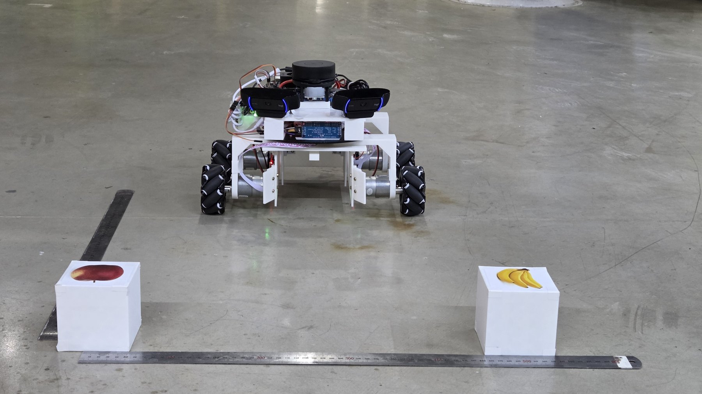
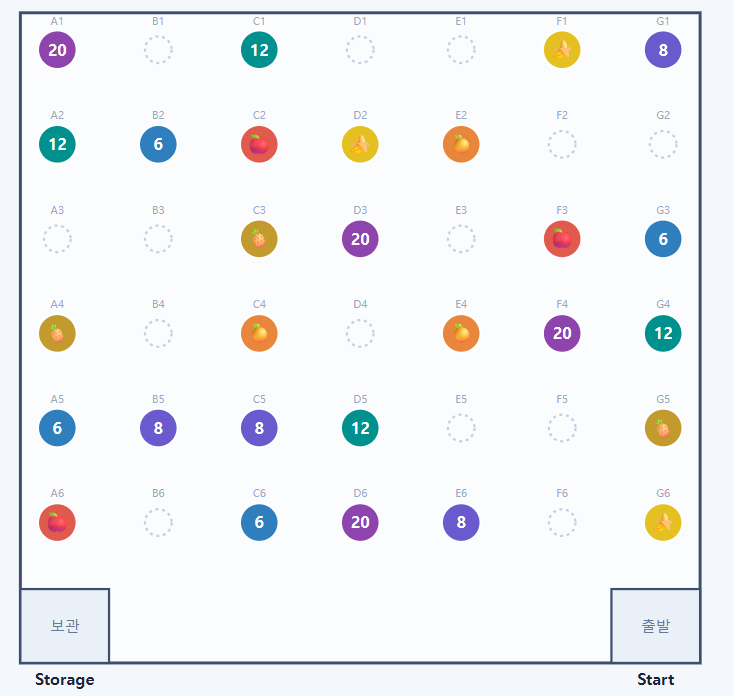

Robotics
Autonomous Object-Collecting Robot
SNU AI Robot Challenge · Team 7 · 2026 · 2nd Place
A mecanum-wheel robot that converts dual-camera detections into object collection and return maneuvers.

Task and design constraints
The target object classes are announced at match time. The robot must identify them, collect them, and return them to the delivery zone.
- Perception: Recognize targets from two angled cameras while the robot moves.
- Mechanism: Plan around a passive basket that holds three objects and can release them during reverse motion.
My contribution
I contributed across perception and model training, planning, data collection, hardware, and system integration. The robot and competition result were developed with Team 7.
Robot system
1. Hardware and motion commands
A Jetson Orin Nano handles perception and navigation. An ESP32 converts serial body-velocity commands into four wheel commands.
- Motor calibration: Calibrate wheel direction and feed-forward gains before combining forward, lateral, and rotational motion.
- Command duration: Attach a duration and auto-stop to motion commands.
2. Two cameras, one geometric view
Run YOLO segmentation on both angled cameras and merge each camera cycle into one UDP message.
- Bearing conversion: Use each camera’s focal length and mounting angle to express a detection in the robot’s forward-facing view.
- Decision gates: Check confidence, predicted bearing, distance-normalized mask area, and arena-cell ownership before selecting an object.
- Distance normalization: Multiply mask area by squared relative range so the area gate accounts for apparent size changes.
- Frame-group voting: Deduplicate same-class votes within each captured-frame group so overlapping camera views do not count twice.
bearing = camera toe angle + atan((c_x − W/2) / f_x)
normalized area = mask area × (range / reference range)²
c_x is the detection center, W is image width, and f_x is horizontal focal length. Bearing and area gates are applied by navigation, after detection.
3. Collection events and capacity-triggered return
Follow the arena sweep and trigger collection from live target decisions.
- Basket constraint: The passive collector holds three objects. Forward motion captures; reverse motion can release the load.
- Shared cargo count: Count collected objects across route segments. A full-basket event interrupts the current motion sequence.
- Return control: The central controller reads a fresh stationary pose and drives the return route.
- Released scope: The forward path records return state. Autonomous unloading and forward-sweep resumption are not implemented in that path.


4. Geometry-based localization and calibrated control
Fit the known rectangular arena to LiDAR points and estimate the robot’s pose from its walls.
- Wall fit: Search wall orientation, refine the minimum-area fit, and use robust wall extents to reject distant returns.
- Turning: Size a calibrated turn pulse and stop it using integrated IMU yaw.
- Strafing: Use LiDAR feedback for lateral motion. The less accurate timed alternative remains disabled by default.
- Braking: Apply calibrated reverse pulses and keep cruise speed inside the measured braking range.
5. Perception and motion tested together
Set detection thresholds for the number of observations available while the robot passes an object.
- Latency: Benchmark on the Jetson. Scan speed determines how many detection frames reach the decision gate.
- Stream reliability: Detect frozen camera streams and save raw images alongside motion logs for diagnosis.
Competition result
2026 SNU AI Robot Challenge. The final score combines two competition runs.
| Measure | Result |
|---|---|
| Final placement | 2nd |
| Final score | 140 / 200 |
| Match duration | 180 s |